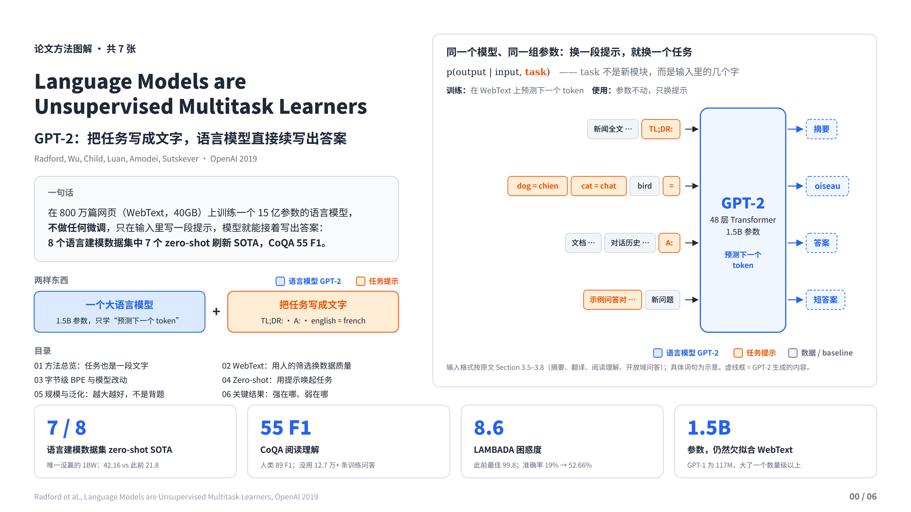
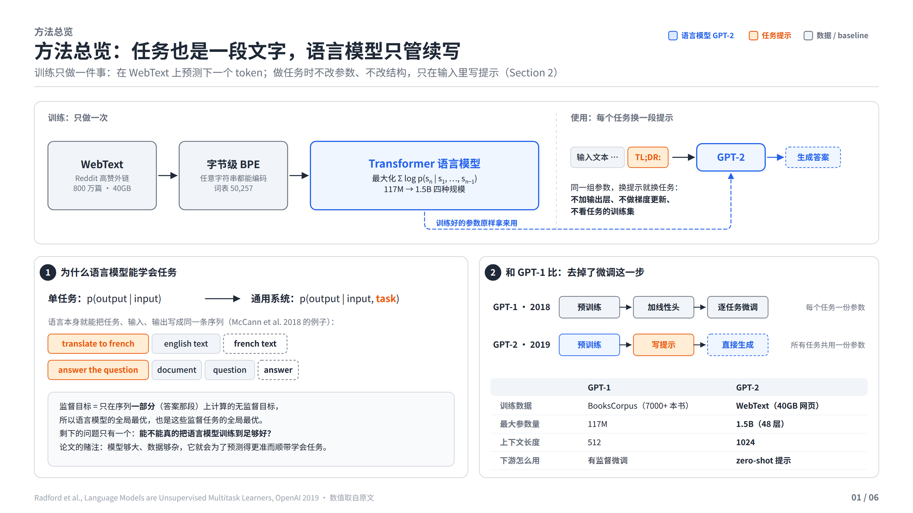
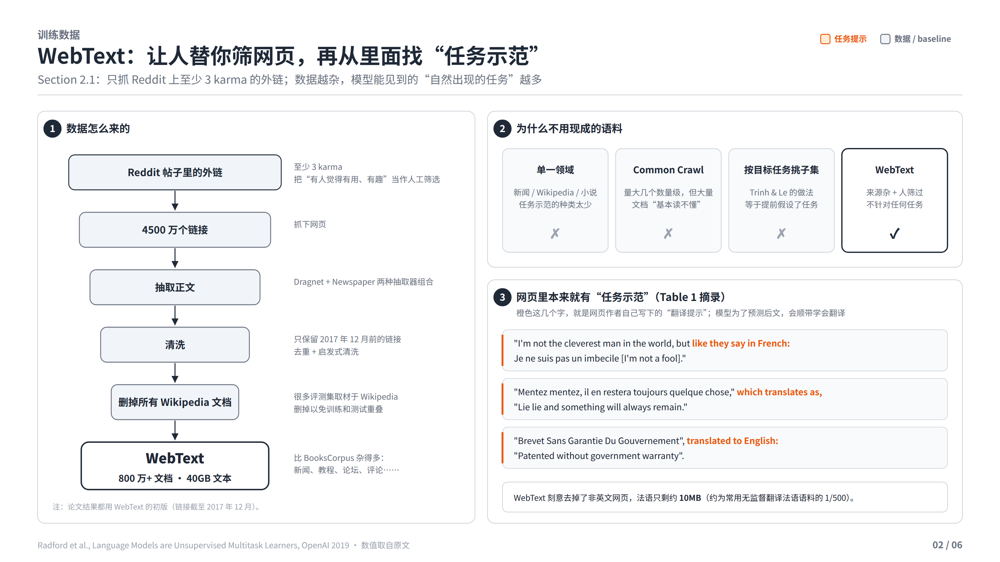
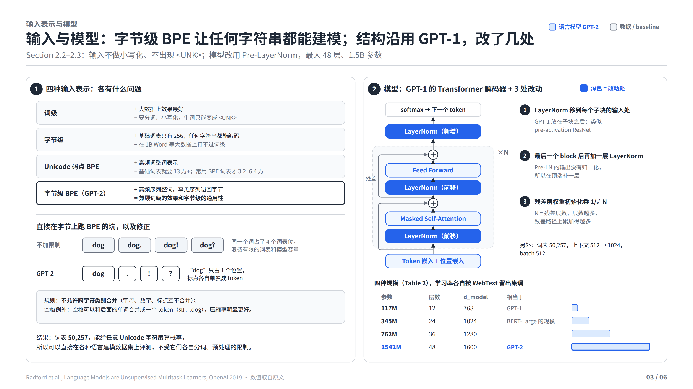
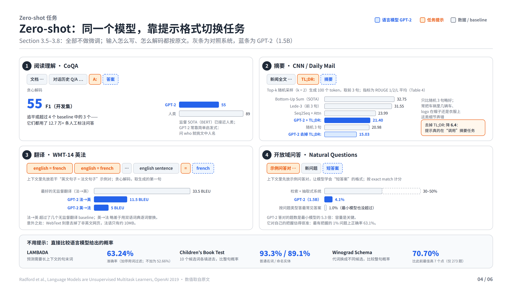
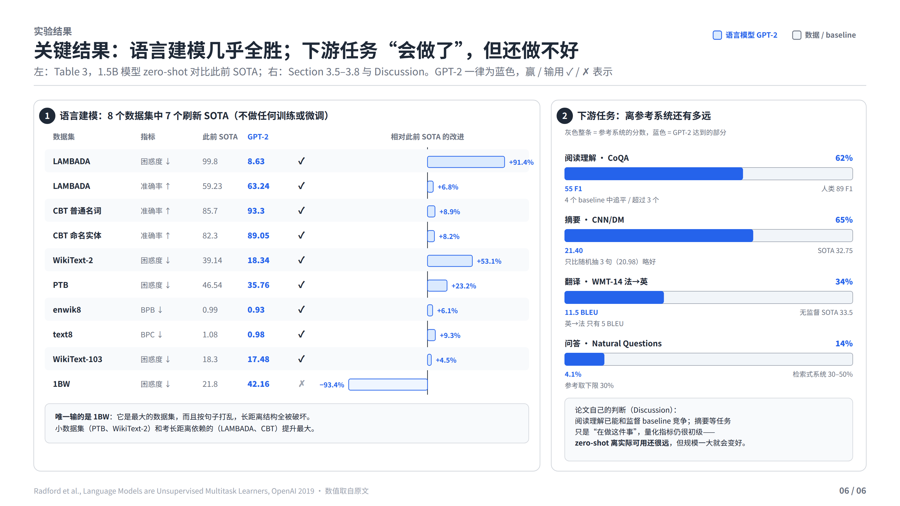
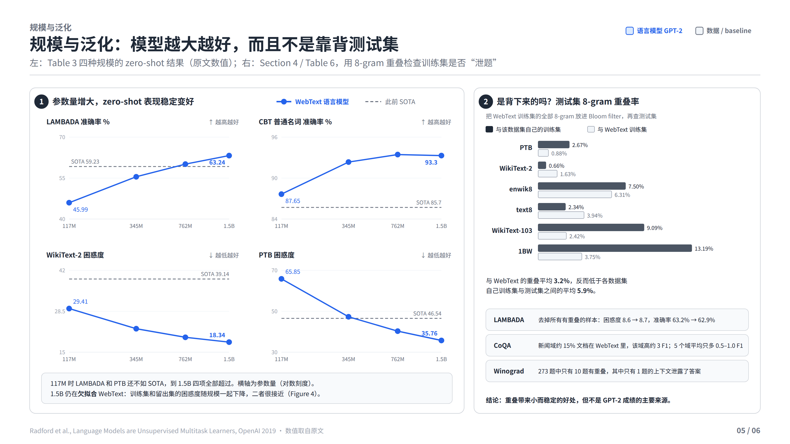

2019 年 2 月，OpenAI 给一个语言模型喂了这样一句开头：
“In a shocking finding, scientist discovered a herd of unicorns living in a remote, previously unexplored valley, in the Andes Mountains. Even more surprising to the researchers was the fact that the unicorns spoke perfect English.” 一项惊人发现：科学家在安第斯山脉一处从未有人到过的山谷里，发现了一群独角兽。更让研究者吃惊的是，这些独角兽说着一口流利的英语。（Table 13，人类写的开头）
模型接着写下去：给独角兽起了名字，编出一位拉巴斯大学的进化生物学家 Jorge Pérez，还替他写了几句采访引语。整篇读起来像一篇像模像样的新闻稿。这段样例让 GPT-2 一夜出名，OpenAI 也因为担心滥用，决定分阶段发布模型，最大的 15 亿参数版本直到当年 11 月才放出。
不过，如果你只记住了“它会编故事”，那就错过了这篇论文真正想说的事。论文的标题里没有“生成”二字，它叫《语言模型是无监督的多任务学习者》。
论文里有一个比独角兽更不起眼、也更关键的实验：在一篇新闻后面加上 “TL;DR:” 这几个字符（英文网络用语，意思是“太长不看，简单说就是”），模型就开始写摘要；把这几个字符删掉，摘要分数立刻掉 6.4 分。这个模型从来没有被教过“摘要”这个任务。它是从哪儿学会的？
先回到 2019 年初的行业现状。GPT-1 和 BERT 刚刚确立了“先预训练、再微调”的做法：在海量无标注文本上训练一个大模型，然后针对每个具体任务，收集几千到几十万条标注数据，加一个输出层，把整个模型再训练一遍。
这个流程很有效，但每做一个新任务，还是要一份新的标注数据。论文开头对这种做法的评价很不客气：
“Current systems are better characterized as narrow experts rather than competent generalists.” 现在的系统更像是狭窄领域的专家，而不是能干的通才。（Section 1）
为什么说“狭窄”？因为监督学习只会做训练集里那件事，输入分布稍有变化就容易出错。作者认为，根源在于“单任务、单领域”的训练方式。多任务学习是个方向，但当时最雄心勃勃的工作，也只在 10 个或 17 个“（数据集，目标）”组合上训练过。从元学习的角度看，每个组合只算一个训练样本，而通常一个模型要见过成百上千个样本才能学会泛化。靠人工一份一份地造数据集，凑不出这么多“任务样本”。
打个比方。传统做法像是培养一个只会做数学卷子的学生，换成语文卷子，就得再找一批语文卷子从头练。多任务学习是同时给他十几门课的卷子。GPT-2 想做的事更彻底：不给卷子，只让他读遍整个互联网，然后看他能不能直接上考场。
一个通用系统要能做很多任务，就不能只学 $p(\text{output}\mid\text{input})$，还得知道“现在要做什么”，也就是学：
$$p(\text{output}\mid\text{input},\ \text{task})$$人话：同一段输入，任务不同，答案就不同。以前的做法是给每个任务配一个专门的模块或训练流程，来告诉模型“task 是什么”。
GPT-2 的关键判断是：task 不需要专门的模块，它本身就可以写成一段文字。论文举的例子是：翻译样本可以写成 (translate to french, english text, french text)，阅读理解可以写成 (answer the question, document, question, answer)。既然任务、输入、输出都能写成一串符号，那它们就都属于语言模型要建模的“语言”。
更进一步，互联网上本来就散落着这样的“任务示范”。WebText 训练集里就有这样的句子：“I'm not the cleverest man in the world, but like they say in French: Je ne suis pas un imbecile”。没有人给它打标签，但它确实是一个英译法的例子。论文把这个推测写得很直接：
“Our speculation is that a language model with sufficient capacity will begin to learn to infer and perform the tasks demonstrated in natural language sequences in order to better predict them, regardless of their method of procurement.” 我们推测，容量足够大的语言模型，为了更好地预测文本，会开始学着推断并执行文本中示范的任务，不管这些文本是怎么来的。（Section 2）
这就像一个从小在双语家庭长大的孩子：没人专门教他翻译，但他听惯了大人一句中文、一句英文地说同一件事，慢慢就会翻了。

GPT-2 的训练目标和 GPT-1 完全一样，就是最普通的语言模型。把一段文本 $x$ 拆成符号序列 $(s_1,\dots,s_n)$，按链式法则分解它的概率（论文 Eq. 1）：
$$p(x)=\prod_{i=1}^{n}p(s_i\mid s_1,\dots,s_{i-1})$$人话：一段话出现的概率，等于每个词在“看过前面所有词”的条件下出现的概率连乘起来。训练就是让真实文本的这个概率尽量大。
为什么这么简单的目标也能学会监督任务？论文给了一个漂亮的论证：
“Since the supervised objective is the the same as the unsupervised objective but only evaluated on a subset of the sequence, the global minimum of the unsupervised objective is also the global minimum of the supervised objective.” 监督目标和无监督目标其实是同一个，只是前者只在序列的一部分（答案那段）上计算，所以无监督目标的全局最优，同时也是监督目标的全局最优。（Section 2）
拿阅读理解来说：把“文档、问题、答案”拼成一条序列，监督学习只在“答案”那几个词上算损失，语言模型则在整条序列的每个词上都算。一个能把整条序列预测到完美的模型，自然也把答案预测对了。剩下的问题只有一个：能不能把语言模型训练得足够好。作者的答案分成四步：选什么书、怎么拆字、搭多高的楼、考试时怎么出题。
以前的语言模型大多只用一个领域的文本：新闻、维基百科或者小说。GPT-1 用的就是 7000 本小说。GPT-2 要的是“尽可能多的领域和语境”，因为任务示范越多样，模型能学会的任务就越多。
最大的现成网页数据是 Common Crawl，但质量很差，有人发现里面大量文档“内容几乎无法理解”。只挑和目标任务相似的子集？那等于提前假设了要考什么，违背了初衷。
OpenAI 的办法很巧：把筛选外包给 Reddit 网友。他们抓取 Reddit 上所有获得至少 3 个 karma（点赞积分）的外链，理由是“这可以看作一个启发式指标，说明其他用户觉得这个链接有意思、有用，或者好笑”。4500 万个链接，经过正文抽取、去重和清洗，得到 800 多万篇文档、40GB 文本，命名为 WebText。他们还特意删掉了所有维基百科页面，因为很多评测数据集取材于维基，留着会造成训练与测试重叠。
这相当于让一位只读过小说的学生，改读一个“被几千万读者点过赞的网页合集”：菜谱、游戏攻略、新闻、技术博客、历史长文，什么都有。

要让一个模型能“做任何任务”，它首先得能读任何字符串。传统的词级模型会把没见过的词变成 <UNK>，还要先小写化、分词，这些预处理都会丢信息。直接按字节建模最通用，但当时的字节级模型效果明显更差。
BPE（字节对编码，一种把常见字符组合合并成一个 token 的分词方法）是中间路线：常见的词整个当一个 token，罕见的词拆成小块。问题是，常见实现按 Unicode 字符来合并，要覆盖所有 Unicode 字符，基础词表就超过 13 万，还没开始合并就已经太大了。
GPT-2 的做法是在字节上做 BPE，基础词表只有 256 个。但直接这样做会出现一个浪费：dog.、dog!、dog? 会各自被合并成一个 token，挤占有限的词表。于是他们加了一条规则：不同字符类别（字母、数字、标点）之间不合并，空格例外。最终词表大小是 50,257。
这条规则在代码里就是一个正则表达式。先用它把文本切成“片段”，BPE 只在片段内部合并：
# Should haved added re.IGNORECASE so BPE merges can happen for capitalized versions of contractions
self.pat = re.compile(r"""'s|'t|'re|'ve|'m|'ll|'d| ?\p{L}+| ?\p{N}+| ?[^\s\p{L}\p{N}]+|\s+(?!\S)|\s+""")
def bytes_to_unicode():
bs = list(range(ord("!"), ord("~")+1))+list(range(ord("¡"), ord("¬")+1))+list(range(ord("®"), ord("ÿ")+1))
cs = bs[:]
n = 0
for b in range(2**8):
if b not in bs:
bs.append(b)
cs.append(2**8+n) # 不可见字节映射到 256 之后的码位
n += 1
cs = [chr(n) for n in cs]
return dict(zip(bs, cs))src/encoder.py:52-53、src/encoder.py:9-28（openai/gpt-2，有删节）。\p{L}+ 是一串字母，\p{N}+ 是一串数字，[^\s\p{L}\p{N}]+ 是一串标点，各自前面可以带一个空格，这正是论文说的“空格例外”。bytes_to_unicode 把 256 个字节一一映射成可打印字符，这样就能复用基于字符串的 BPE 实现。注释里那句 “Should haved added re.IGNORECASE” 是作者留下的自我检讨：'S 这种大写缩写不会被切出来。
这个设计带来的直接好处是：模型能给任意字符串算概率。所以 GPT-2 可以直接在各种语言模型基准上评测，不管它们用的是什么分词和预处理。
模型结构基本沿用 GPT-1 的 Transformer 解码器，只做了几处改动：
人话：网络越深，残差路径上累加的东西越多，初始输出的方差会越滚越大；每层先缩小一点，叠起来就不会爆。这三处改动都是为了一件事：让很深的网络能稳定训练。GPT-1 只有 12 层，GPT-2 最大要叠到 48 层。
前两处改动在官方代码里一眼就能看到：
def block(x, scope, *, past, hparams):
with tf.variable_scope(scope):
nx = x.shape[-1].value
a, present = attn(norm(x, 'ln_1'), 'attn', nx, past=past, hparams=hparams)
x = x + a # 先 norm 再 attn，残差直通
m = mlp(norm(x, 'ln_2'), 'mlp', nx*4, hparams=hparams)
x = x + m
return x, present
...
h = norm(h, 'ln_f') # 所有 block 之后的最后一层 LayerNorm
logits = tf.matmul(h_flat, wte, transpose_b=True) # 输出层复用词嵌入矩阵src/model.py:123-130、src/model.py:167-171（openai/gpt-2）。对比 GPT-1 的 norm(x+a, 'ln_1')：GPT-1 是“残差相加后再归一化”，GPT-2 改成“归一化后再进子层，残差路径上不做任何处理”。ln_f 就是论文说的额外 LayerNorm。第三处改动 $1/\sqrt{N}$ 只在训练初始化时起作用，而公开的代码不含训练部分，conv1d 的默认初始化统一是 stddev=0.02，所以在仓库里找不到它。
此外，上下文长度从 512 加到 1024 个 token，batch size 用 512。论文训练了四种规模（Table 2）：
| 参数量 | 层数 | $d_{model}$ | 相当于 |
|---|---|---|---|
| 117M | 12 | 768 | GPT-1 |
| 345M | 24 | 1024 | BERT-Large |
| 762M | 36 | 1280 | — |
| 1542M | 48 | 1600 | GPT-2 |
124M / 355M / 774M / 1558M。本文沿用论文的写法。
训练完之后，GPT-2 不做任何微调。每个任务的做法，就是把题目写成一段“网页上可能出现的文字”，让模型接着往下写。这就是 zero-shot（零样本：不用这个任务的任何训练数据）：
| 任务 | 喂给模型的文字 | 怎么取答案 |
|---|---|---|
| 阅读理解（CoQA） | 文档 + 对话历史 + A: | 贪心解码 |
| 摘要（CNN/Daily Mail） | 文章 + TL;DR: | top-k 采样（k=2）生成 100 个 token，取前 3 句 |
| 翻译（WMT-14） | 若干组 english sentence = french sentence + 新的 english sentence = | 贪心解码，取第一句 |
| 开放域问答（Natural Questions） | 若干组示例问答 + 新问题 | 贪心解码 |
| LAMBADA、CBT、Winograd | 不需要提示 | 直接比较候选答案的概率 |
你会发现，“提示”就是一个约定俗成的格式：网页上，TL;DR: 后面通常跟着一句总结；论坛问答里，A: 后面通常跟着回答。模型并不“理解”你的指令，它只是在续写一段它见过很多次的格式。
摘要实验用到的 top-k 采样，在代码里只有十几行：只保留概率最高的 k 个候选，其余全部压到负无穷。
def top_k_logits(logits, k):
if k == 0:
# no truncation
return logits
def _top_k():
values, _ = tf.nn.top_k(logits, k=k)
min_values = values[:, -1, tf.newaxis] # 第 k 大的值作为门槛
return tf.where(
logits < min_values,
tf.ones_like(logits, dtype=logits.dtype) * -1e10,
logits,
)src/sample.py:5-17（openai/gpt-2）。k=1 就是贪心解码；论文的生成样例（Table 7–13）用的是 k=40，摘要用 k=2，论文说这样“减少重复，并鼓励比贪心解码更抽象的摘要”。同一文件 sample.py:25-40 还有一个 top_p_logits（nucleus 采样），论文里没有用到。

最后，把 GPT-1 和 GPT-2 并排放在一起看：
| GPT-1（2018） | GPT-2（2019） | |
|---|---|---|
| 训练数据 | BooksCorpus，7000 本小说 | WebText，800 万网页，40GB |
| 分词 | BPE，4 万次合并 | 字节级 BPE，词表 50,257 |
| 最大模型 | 12 层，约 1.17 亿参数 | 48 层，15 亿参数 |
| LayerNorm | 残差之后（Post-LN） | 子层之前（Pre-LN）+ 末尾一层 |
| 上下文长度 | 512 | 1024 |
| 怎么用到下游任务 | 加线性头，逐任务微调 | 写提示，直接生成，不更新参数 |
结构上的差别其实不大。真正的区别在最后一行：GPT-1 用标注数据来“教”任务，GPT-2 用一段文字来“唤起”任务。
先看 GPT-2 的老本行。论文在 8 个语言模型基准上 zero-shot 评测，没有在其中任何一个上训练过（Table 3，下表取 1542M 模型）：
| 数据集 | 指标 | 此前 SOTA | GPT-2 |
|---|---|---|---|
| LAMBADA | 困惑度 ↓ | 99.8 | 8.63 |
| LAMBADA | 准确率 ↑ | 59.23 | 63.24 |
| CBT 普通名词 / 命名实体 | 准确率 ↑ | 85.7 / 82.3 | 93.30 / 89.05 |
| WikiText-2 | 困惑度 ↓ | 39.14 | 18.34 |
| PTB | 困惑度 ↓ | 46.54 | 35.76 |
| WikiText-103 | 困惑度 ↓ | 18.3 | 17.48 |
| enwik8 / text8 | BPB / BPC ↓ | 0.99 / 1.08 | 0.93 / 0.98 |
| 1BW | 困惑度 ↓ | 21.8 | 42.16 ✗ |
最惊人的是 LAMBADA。这个数据集专门考长距离依赖：要猜对一段话的最后一个词，人类至少需要看前面 50 个 token。困惑度从 99.8 降到 8.63，相当于模型的“犹豫程度”从在约 100 个词里挑，缩小到在约 9 个词里挑。
唯一输掉的 1BW 也很有说服力。这个数据集在构建时按句子打乱过，长距离结构全部被破坏，而 GPT-2 最擅长的恰恰是利用长上下文。WikiText-2 和 PTB 这种只有一两百万训练 token 的小数据集，则提升最大：在别人的地盘上，它比专门在那里训练的模型还好。
| 任务 | GPT-2（zero-shot） | 参照 |
|---|---|---|
| CoQA 阅读理解 | 55 F1 | 追平或超过 4 个 baseline 中的 3 个；BERT 监督 SOTA 接近人类的 89 F1 |
| CNN/DM 摘要 | ROUGE 平均 21.40 | 随机抽 3 句 20.98；Lead-3 31.55；SOTA 32.75 |
| WMT-14 法→英 | 11.5 BLEU | 无监督翻译 SOTA 33.5 |
| WMT-14 英→法 | 5 BLEU | 略低于逐词替换的双语词典 |
| Natural Questions | 4.1% 完全匹配 | 最小模型不到 1.0%；检索式系统 30%–50% |
| Winograd | 70.70% | 比此前 SOTA 高 7% |
这张表要分开看。CoQA 的 55 F1 是最亮眼的：那些 baseline 用了 12.7 万多条人工标注的问答，GPT-2 一条都没用。翻译的 11.5 BLEU 背后还有一个反直觉的事实：WebText 在构建时特意过滤掉了非英语网页，事后检测，法语内容只有大约 10MB，比无监督翻译研究常用的法语语料小约 500 倍。
摘要是最“难看”的一项：21.40 只比随机抽 3 句高 0.42 分。但我认为它反而是全文最有说服力的实验，原因见下面的 Table 4：
| 方法 | R-1 | R-2 | R-L | R-AVG |
|---|---|---|---|---|
| Bottom-Up Sum（SOTA） | 41.22 | 18.68 | 38.34 | 32.75 |
| Lede-3 | 40.38 | 17.66 | 36.62 | 31.55 |
GPT-2 加 TL;DR: | 29.34 | 8.27 | 26.58 | 21.40 |
| Random-3 | 28.78 | 8.63 | 25.52 | 20.98 |
| GPT-2 不加提示 | 21.58 | 4.03 | 19.47 | 15.03 |
重点在最后两行：同一个模型、同一篇文章，只差 “TL;DR:” 这几个字符，平均分从 15.03 涨到 21.40。不加提示时，模型只是在接着写新闻正文；加了之后，它切换成了“写总结”的模式。论文的原话是，这“证明了可以用自然语言在语言模型中调用特定任务的行为”。分数不高，说明它做得还不好；分数会随提示而跳变，说明“任务”确实是被那几个字唤起的。这正是整篇论文的核心论点。
问答实验里还有一个细节很有意思：GPT-2 对答案给出的概率是校准过的。在它最有把握的 1% 的问题上，准确率达到 63.1%（Table 5 列出了最有把握的 30 个答案，比如“谁写了《物种起源》”答“Charles Darwin”，概率 83.4%）。也就是说，它在某种程度上“知道自己知不知道”。

把这些结果按模型大小排开（Figure 1），几乎每一项都随参数量稳定上升。117M 模型在 PTB 上的困惑度是 65.85，比 SOTA 还差；1.5B 时降到 35.76。论文在摘要里说，模型容量是 zero-shot 迁移成功的关键，“增加容量能以对数线性的方式提升各项任务的表现”。
更关键的是 Figure 4：在 WebText 自己的训练集和测试集上，困惑度随模型变大同步下降，两条曲线几乎平行。这说明 15 亿参数的 GPT-2 仍然在欠拟合，还没有把 WebText 学完。这句话，就是一年后 GPT-3 把参数量放大到 1750 亿的伏笔。
训练集是从网上抓的，测试集很多也来自网上，难免有人怀疑：成绩是不是因为测试题早就出现在训练数据里？
作者用 Bloom filter（一种省内存的集合查询结构）存下了 WebText 训练集的所有 8-gram，然后检查各测试集有多少 8-gram 出现在里面（Table 6）。结果是平均重叠 3.2%，反而低于这些数据集自己的训练集和测试集之间的 5.9%。1BW 自己的训练集和测试集重叠高达 13.19%。在 LAMBADA 上，去掉所有有明显重叠的样本后，困惑度只从 8.6 变成 8.7，准确率从 63.2% 变成 62.9%。
结论是：重叠带来小而稳定的好处，但不是成绩的主要来源。这个检查方法本身也被后来的大模型论文沿用，GPT-3 就专门用了一大节做数据污染分析。

从技术上看，GPT-2 把 GPT-1 论文末尾那个小小的 zero-shot 实验推到了台前，并给出了理论上的解释：监督任务只是语言模型目标的一个子集，任务本身可以写进输入。从此，“提示”成了使用语言模型的基本方式。GPT-3 在此基础上往提示里塞几个示例，就成了 few-shot；后来的指令微调和对话模型，则是让模型更听得懂这些提示。
从方法论上看，它把“规模”变成了一个可以观察的研究变量。四个模型大小近似均匀地分布在对数轴上，每项任务都画成随参数量变化的曲线。这种做法直接通向了 2020 年的 Scaling Laws 论文。它还提出了一种数据观：数据不必是为某个任务准备的，只要足够杂、经过人筛选，任务示范自然就在里面。
从产业上看，“分阶段发布”本身也成了一个事件。它是第一次有 AI 实验室因为担心滥用而推迟发布模型，引发了大量关于开放与安全的讨论。今天大模型发布时常见的“模型卡”和风险评估，在 GPT-2 仓库的 model_card.md 里已经能看到雏形。
论文自己在讨论部分说得很坦白：
“While suggestive as a research result, in terms of practical applications, the zero-shot performance of GPT-2 is still far from use-able.” 作为研究结果，它很有启发性；但就实际应用而言，GPT-2 的 zero-shot 表现离可用还很远。（Section 6）
作者自己承认的局限还有几处：摘要只比随机基线略好；很多实际任务上 GPT-2 “可能并不比随机好”；不知道微调后的上限在哪里；单向模型能不能靠规模弥补 BERT 证明的双向优势，也还没有答案。他们还观察到，CoQA 上的模型常常在用一些简单的检索启发式，比如“遇到 who 问题，就从文档里挑一个人名作答”。
我想再补充三点。第一，提示和评测细节都有人工调整的成分：LAMBADA 加了停用词过滤才到 63.24%，语言模型基准用了可逆的去分词器（带来 2.5 到 5 的困惑度收益），摘要用了 k=2 的采样并取前 3 句。这些选择都合理，但都是针对任务手工做的，“完全不针对任务”的说法要打个折扣。第二，复现很难：WebText 训练集和训练代码都没有公开，社区只能按论文描述自己重建（例如 OpenWebText）。第三，“全局最优一致”的论证只说明了终点相同，没有说明需要多少数据和算力才能走到终点。作者在初步实验里也承认，这种方式“学得比显式的监督方法慢得多”。用语言模型目标学会一个任务，效率可能远低于直接给标注，GPT-2 是用 40GB 数据和 15 亿参数换来了“不用标注”。
回到开头的问题：那几个字符 “TL;DR:”，为什么能让模型开始写摘要？
因为在互联网上，无数人在长文末尾写下 “TL;DR:”，后面跟一句总结。GPT-2 读过 800 万篇网页，为了把下一个词猜准，它不得不学会“看到 TL;DR: 就该总结”。翻译、问答、阅读理解也是一样。没有人教它任务，任务就藏在它要预测的文字里。会说英语的独角兽只是副产品，真正的发现是：只要模型足够大，读得足够杂，“猜下一个词”这一个目标里就已经包含了很多任务。
1. 任务可以写成文字：$p(\text{output}\mid\text{input},\text{task})$ 里的 task 不需要新模块，TL;DR:、A:、english = french 这样的提示就能切换任务；去掉 TL;DR:，摘要分降 6.4。
2. 数据要杂，且经人筛选：WebText 用 Reddit 3 karma 做质量过滤，800 万网页里自然出现的任务示范，是模型学会任务的来源。
3. 规模是关键变量：117M 到 1.5B，各项结果近似对数线性上升，语言建模 8 项赢 7 项；1.5B 仍在欠拟合 WebText，这条路还能接着走。